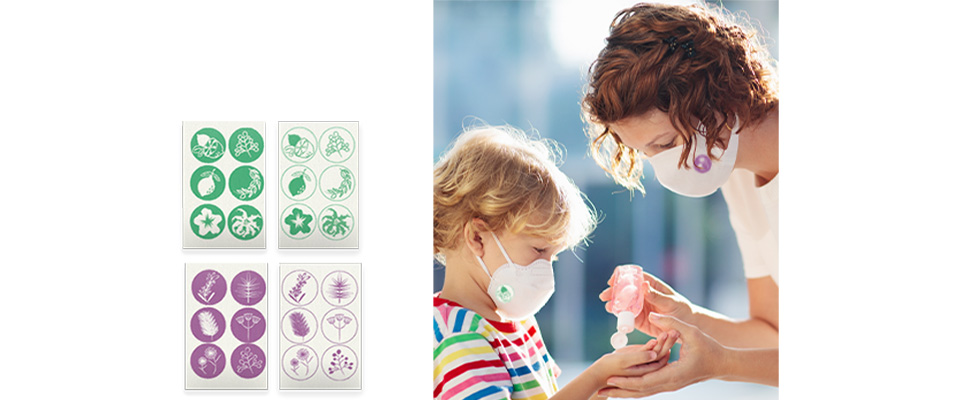

マスク用アロマシール
クラウドワークス案件

作品概要
- 呼吸器内科クリニック３周年の粗品として配布するマスク用アロマシールデザイン
- オーガニックレモンとユーカリの香り
- １シート６種類、色は２トーン（色 × ホワイト）
- シンプルで爽やか、ナチュラルなデザインを希望
- ターゲット層は子ども、４０〜５０代、高齢者
ポイント
- レモンやユーカリ、草花が大きめのシンボルマークですっきりシンプルなデザインに。
- 幅広い世代にも馴染むよう、穏やかな色合いにこだわった。
- 制作時間：３時間
- 使用ソフト：Illustrator/ Photoshop